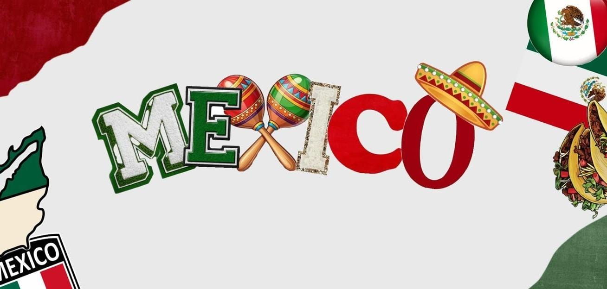

O México possui uma rica herança histórica que se divide principalmente entre os períodos pré-hispânico e colonial. Antes da chegada dos espanhóis, a região foi berço de civilizações avançadas e de grande imponência, como os maias e os astecas (ou Mexicas), cujas ruínas e legados arquitetônicos, astronômicos e culturais fascinam o mundo até hoje. Com a conquista espanhola no século XVI, o país passou a integrar o Vice-Reino da Nova Espanha, misturando tradições europeias e indígenas e moldando a identidade mestiça do México moderno, que conquistou sua independência em 1821.
Chichén Itzá: Antiga cidade maia localizada na Península de Yucatán, famosa pela imponente pirâmide de Kukulcán, considerada uma das Novas Sete Maravilhas do Mundo Moderno.
Pirâmides de Teotihuacán: Sique arqueológico monumental localizado perto da Cidade do México, onde se destacam a Pirâmide do Sol e a Pirâmide da Lua.
Centro Histórico da Cidade do México: Uma das praças mais importantes do mundo, o Zócalo, cercada por construções históricas como a Catedral Metropolitana e o Palácio Nacional.
| Locais para visitar | Pontos turísticos | Localidade | Valor de Acesso | Horários |
|---|---|---|---|---|
| Chichén Itzá | Península de Yucatán | Pago | 8h ás 17h | Pirâmides de Teotihuacán | Cerca de 50 km a nordeste da Cidade do México. | pago | Diariamente, das 9h ás 17h |
| Centro Histórico da Cidade do México (Praça Zócalo) | No coração da Cidade do México (Plaza de la Constitución). | Gratuito | 24h | Ruínas de Tulum | Na costa da Riviera Maya | Pago | Diariamente, 8h ás 17h |
| Xochimilco | Zona sul da Cidade do México | Gratuito | Flexível | |
Cenotes de Yucatán: Piscinas naturais subterâneas de águas cristalinas sagradas para os maias, excelentes para natação e mergulho.
Praias de Tulum e Cancún: Águas azul-turquesa do mar do Caribe e areias brancas com excelente infraestrutura turística e ruínas à beira-mar.
Xochimilco: Passeios de barco tradicionais (trajineras) coloridos pelos canais remanescentes do lago asteca na Cidade do México.
Cholula: Conhecida por sua grande pirâmide coroada por uma igreja colonial, situada muito perto de Puebla.
Coyoacán: Um bairro charmoso e cultural na Cidade do México, famoso por ser o local de nascimento e residência da pintora Frida Kahlo.
Valladolid: Uma cidade colonial mágica localizada na Península de Yucatán, ideal como ponto de partida para visitar vários cenotes e ruínas maias.
Tacos al Pastor: Tortilhas de milho recheadas com carne de porco marinada, assada no espeto vertical, acompanhadas de abacaxi, coentro e cebola.
Mole Poblano: Um dos pratos mais emblemáticos da culinária mexicana, que consiste em um molho complexo feito com diferentes tipos de pimentas, especiarias e chocolate, servido sobre frango.
Guacamole: Uma pasta tradicional feita à base de abacate amassado, tomate, cebola, coentro e suco de limão, geralmente consumida com totopos (nachos).
Mariachi: O gênero musical mais tradicional do México, caracterizado por conjuntos de músicos trajados com roupas de charro que tocam violões, trompetes e violinos, expressando a alegria e a alma do país (famoso em celebrações como o Dia dos Mortos).
Ranchera: Estilo musical folclórico romântico e nostálgico, frequentemente associado à vida rural e interpretado por mariachis.
Cumbia Mexicana: Ritmo tropical contagiante muito popular em festas e bailes populares por todo o território nacional.